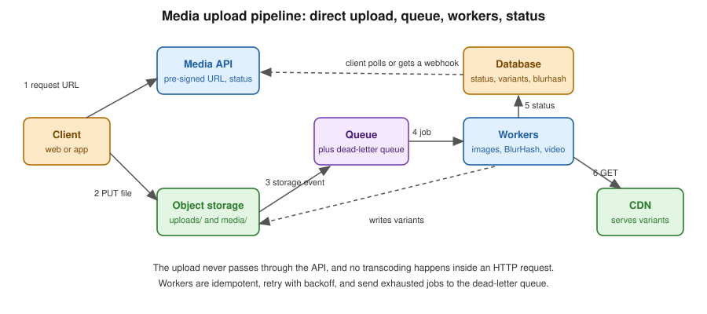

Spring Boot and Quarkus Media Pipeline
|
This content was generated with the assistance of AI and should be verified against the official documentation before being relied on in production. |
Baseline date: 2026-10-07. This page assembles the pieces from the Java libraries page into the reference flow of upload pipelines. The running example is the Bookshelf cover upload: a book cover goes to object storage, and the service produces AVIF, WebP and JPEG variants, a BlurHash, and, for the video trailer, a few renditions and a poster.
The Spring Boot flow of this page was built and run as described: Spring Boot 4.1.2 (Spring Framework 7, Spring AMQP 4.1.2,
Spring Batch 6.0.6, Hibernate ORM 7.4) on Java 17, against RabbitMQ 4 in Docker, with FFmpeg 9.0.2 from a Docker image on the
PATH of the worker. The pre-signed URL snippet was compiled and run against the AWS SDK for Java 2.31. The Quarkus section
was not compiled or run, and follows the Quarkus guides.

Spring Boot
Entity and API
@Entity
public class Media {
@Id private UUID id;
private String originalKey; // uploads/<id>/original
private String contentType;
@Enumerated(EnumType.STRING) private MediaStatus status; // UPLOADING, QUEUED, PROCESSING, READY, FAILED
private String blurhash;
private Integer width;
private Integer height;
private String failureReason;
@JdbcTypeCode(SqlTypes.JSON) private List<Variant> variants = new ArrayList<>();
// getters and setters omitted
}
public record Variant(String format, int width, String key) {}@RestController
@RequestMapping("/media")
class MediaController {
private final MediaService service;
MediaController(MediaService service) { this.service = service; }
@PostMapping
UploadTicket create(@RequestBody @Valid CreateMedia request) {
return service.createUpload(request); // returns id and a pre-signed PUT URL
}
@PostMapping("/{id}/complete")
ResponseEntity<Void> complete(@PathVariable UUID id) {
service.markUploaded(id); // verifies the object, publishes the job
return ResponseEntity.accepted().build();
}
@GetMapping("/{id}")
MediaView get(@PathVariable UUID id) {
return service.view(id); // status, blurhash, variants with CDN URLs
}
}The pre-signed URL is created with the AWS SDK S3Presigner (or Spring Cloud AWS, or the equivalent for Google Cloud
Storage and Azure Blob Storage), see file storage and
object stores. Pin the content type and a maximum length into the signature so that a client cannot upload something
other than it declared, and validate the real content again in the worker, see
security and operations.
URL putUrl = presigner.presignPutObject(r -> r
.signatureDuration(Duration.ofMinutes(10))
.putObjectRequest(p -> p.bucket(bucket).key("uploads/" + id + "/original")
.contentType(request.contentType()).contentLength(request.size())))
.url();The query string of the URL this produces contains X-Amz-SignedHeaders=content-length;content-type;host, so S3 rejects a PUT
whose length or content type differs from what the ticket promised. Reference:
AWS SDK for Java, presigned URLs.
Queue and worker
Publish the job with Spring AMQP, as in Spring Boot with RabbitMQ. Kafka works as well, see Spring Boot with Kafka. The worker is a listener on a separate deployment, so you can scale and limit it independently:
@Component
class MediaWorker {
@RabbitListener(queues = "media.process")
void handle(ProcessMedia job) {
Media media = repository.findById(job.id()).orElseThrow();
if (media.getStatus() == MediaStatus.READY && media.getVariantsVersion() >= job.version()) {
return; // idempotent: redelivery of finished work does nothing
}
media.setStatus(MediaStatus.PROCESSING);
repository.save(media);
byte[] original = storage.get(media.getOriginalKey());
ImageInfo info = images.verify(original); // magic bytes, size, dimensions
BufferedImage small = images.downscale(original, 64);
media.setBlurhash(BlurHash.encode(small, 4, 3));
List<Variant> variants = new ArrayList<>();
for (int width : new int[] {320, 640, 1280}) {
for (String format : new String[] {"avif", "webp", "jpg"}) {
String key = "media/" + media.getId() + "/w" + width + "." + format;
storage.put(key, images.resize(original, width, format));
variants.add(new Variant(format, width, key));
}
}
media.setVariants(variants);
media.setWidth(info.width());
media.setHeight(info.height());
media.setVariantsVersion(job.version()); // the recipe version this result was produced with
media.setStatus(MediaStatus.READY);
repository.save(media);
}
}The job carries the recipe version it asks for (ProcessMedia(UUID id, int version)), and the worker skips a media item only
when it is READY at that version or newer. A check on the status alone would turn every backfill message into a no-op, since
the rows being backfilled are exactly the READY ones. images is a thin wrapper over Thumbnailator for JPEG and PNG and over libvips for AVIF and WebP. Retries with backoff
and a dead-letter queue are configured on the listener container and on the queue, see
RabbitMQ reliability, dead-lettering and TTL.
When the message ends in the dead-letter queue, a small consumer sets the status to FAILED and records the reason.
For video, the same worker shape calls Jaffree (see Java libraries) to probe, transcode each rendition and extract the poster. Run video workers as separate listeners with their own queue and concurrency of one or two per pod, because a single FFmpeg run uses several cores.
Backfills with Spring Batch
When a breakpoint is added or an encoder is improved, existing media must be reprocessed. A Spring Batch job reads the rows to reprocess and publishes jobs, or processes them directly in chunks, see Spring Batch and chunk-oriented processing:
@Configuration
class BackfillConfig {
static final int CURRENT_VARIANTS_VERSION = 1;
@Bean @StepScope
JpaPagingItemReader<Media> mediaReader(EntityManagerFactory emf, @Value("#{jobParameters['version']}") Long version) {
return new JpaPagingItemReaderBuilder<Media>()
.name("mediaReader").entityManagerFactory(emf)
.queryString("select m from Media m where m.variantsVersion < :v order by m.id")
.parameterValues(Map.of("v", version.intValue())).pageSize(50).build();
}
@Bean @StepScope
ItemProcessor<Media, ProcessMedia> mediaProcessor(@Value("#{jobParameters['version']}") Long version) {
return media -> new ProcessMedia(media.getId(), version.intValue());
}
@Bean Step backfillStep(JobRepository repository, PlatformTransactionManager tx, JpaPagingItemReader<Media> reader,
ItemProcessor<Media, ProcessMedia> processor, RabbitTemplate rabbit) {
return new StepBuilder("backfillVariants", repository)
.<Media, ProcessMedia>chunk(50)
.transactionManager(tx)
.reader(reader)
.processor(processor)
.writer(chunk -> chunk.getItems().forEach(job -> rabbit.convertAndSend("", MediaConfig.QUEUE, job)))
.build();
}
@Bean Job backfillJob(JobRepository repository, Step backfillStep) {
return new JobBuilder("backfillVariants", repository).start(backfillStep).build();
}
}The reader needs order by for the paging reader, because the pages are separate queries and without a total order a row
can be skipped or read twice when the database returns the rows in another order. The recipe version comes in as a job parameter
(@StepScope and jobParameters['version']), so the same job backfills version 2 today and version 3 next year. The step uses
chunk(int) followed by transactionManager(...), the non-deprecated entry point of Spring Batch 6.0: the older
chunk(int, PlatformTransactionManager) form still compiled in the same project, but it is deprecated for removal.
Publishing instead of processing keeps the heavy work in the same worker code path and respects its concurrency limits.
The variantsVersion column is an integer bumped whenever the recipe changes, and the version in the message is what makes the
worker reprocess a READY item.
References: Spring AMQP, Spring Batch and Spring Framework data access.
The status machine and what a run looked like
The Media row is the state machine of the flow, and every transition is a place where a retry or a crash can arrive:
The application of this page was run end to end with three uploads, through the same API a client uses. The requests were
POST /media, a PUT of the bytes to the returned upload URL (a local endpoint standing in for the pre-signed URL),
POST /media/{id}/complete twice (the second call changes nothing, because markUploaded only acts on UPLOADING), and
GET /media/{id} until the status settled:
| Upload | Result | Detail |
|---|---|---|
The 1920 by 1080 cover JPEG |
READY within two polls |
JPEG variants of 320, 640 and 1280 pixels, a BlurHash, and |
The 20 second trailer, |
READY after 18 seconds |
Five variants: three HLS media playlists (1080, 720 and 360), the |
5 KB of random bytes declared as |
FAILED after about five seconds |
|
The retry and the dead-letter route are configuration, not code in the worker:
spring.rabbitmq.listener.simple.concurrency=1
spring.rabbitmq.listener.simple.prefetch=1
spring.rabbitmq.listener.simple.retry.enabled=true
spring.rabbitmq.listener.simple.retry.max-retries=3
spring.rabbitmq.listener.simple.retry.initial-interval=500ms
spring.rabbitmq.listener.simple.retry.multiplier=2@Configuration
class MediaConfig {
static final String QUEUE = "media.process";
static final String DLQ = "media.process.dlq";
@Bean Queue processQueue() {
return QueueBuilder.durable(QUEUE).deadLetterExchange("").deadLetterRoutingKey(DLQ).build(); // rejected messages go to the DLQ
}
@Bean Queue deadLetterQueue() { return QueueBuilder.durable(DLQ).build(); }
@Bean JacksonJsonMessageConverter messageConverter() { return new JacksonJsonMessageConverter(); }
}With the listener retry enabled, the default recoverer is RejectAndDontRequeueRecoverer: the log shows "Retries exhausted
for message" and the broker routes the rejected message through the queue’s dead-letter arguments to media.process.dlq.
prefetch=1 and concurrency=1 give one job at a time per instance, which is what a video worker needs. Use more consumers
for images, which are short and cheap.
Publish after the transaction commits
The endpoint changes the database (status QUEUED) and publishes a message. If it published inside the transaction, the worker could receive the message before the commit and find the row still UPLOADING, or the transaction could roll back after the message left. Spring’s transaction-bound events solve the common case without an outbox:
@Transactional
public void markUploaded(UUID id) {
Media media = repository.findById(id).orElseThrow();
if (media.getStatus() != MediaStatus.UPLOADING) return; // a repeated call changes nothing
media.setStatus(MediaStatus.QUEUED);
events.publishEvent(new ProcessMedia(id, BackfillConfig.CURRENT_VARIANTS_VERSION)); // delivered only if this transaction commits
}
@TransactionalEventListener(phase = TransactionPhase.AFTER_COMMIT)
void publish(ProcessMedia job) {
rabbit.convertAndSend("", MediaConfig.QUEUE, job);
}@TransactionalEventListener(phase = AFTER_COMMIT) runs the method only after a successful commit, so the message exists only
for committed rows. The remaining gap is a crash between the commit and the publish: the row stays QUEUED and no message
exists. Close it with a periodic job that republishes rows stuck in QUEUED for longer than a few minutes (the idempotent
worker makes a duplicate harmless), or with a transactional outbox when you cannot accept even that delay, see
upload pipelines.
The video worker in Java
The worker calls FFmpeg through ProcessBuilder with an argument list, a time limit and both output pipes drained (an unread
pipe fills up and blocks the child process). Jaffree, described on the
Java libraries page, builds the same command line and
adds a progress listener, and is a good choice when you need progress. The version below needs no dependency:
/** Runs ffmpeg or ffprobe with an argument list (never a shell string), a time limit and bounded output capture. */
final class FfmpegRunner {
private FfmpegRunner() {}
static String run(long timeoutSeconds, String... command) throws IOException, InterruptedException {
Process process = new ProcessBuilder(List.of(command)).redirectErrorStream(false).start();
StringBuilder out = new StringBuilder();
StringBuilder err = new StringBuilder();
Thread stderr = reader(process.getErrorStream(), err); // an unread pipe blocks the process
Thread stdout = reader(process.getInputStream(), out);
if (!process.waitFor(timeoutSeconds, TimeUnit.SECONDS)) {
process.destroyForcibly();
throw new IOException(command[0] + " timed out after " + timeoutSeconds + " s");
}
stdout.join(); stderr.join();
if (process.exitValue() != 0) {
String tail = err.substring(Math.max(0, err.length() - 500));
throw new IOException(command[0] + " exited with " + process.exitValue() + ": " + tail);
}
return out.toString();
}
private static Thread reader(java.io.InputStream in, StringBuilder sink) {
Thread thread = new Thread(() -> drain(in, sink));
thread.setDaemon(true);
thread.start();
return thread;
}
private static void drain(java.io.InputStream in, StringBuilder sink) {
try (var reader = new java.io.BufferedReader(new java.io.InputStreamReader(in))) {
String line;
while ((line = reader.readLine()) != null) { synchronized (sink) { sink.append(line).append('\n'); } }
} catch (IOException ignored) { }
}
static List<String> args(String... parts) { return new ArrayList<>(List.of(parts)); }
}@Component
public class VideoPipeline {
record Rung(String name, int height, int crf, int maxrateK) {}
record Result(int width, int height, List<Variant> variants) {}
private static final List<Rung> RUNGS = List.of(
new Rung("1080p", 1080, 22, 6000), new Rung("720p", 720, 22, 3000), new Rung("360p", 360, 23, 800));
private static final JsonMapper JSON = JsonMapper.builder().build();
Result process(Path original, Path outDir, String keyPrefix) throws IOException, InterruptedException {
JsonNode probe = JSON.readTree(FfmpegRunner.run(60, "ffprobe", "-v", "error", "-select_streams", "v:0",
"-show_entries", "stream=width,height,r_frame_rate:format=duration", "-of", "json", original.toString()));
if (probe.path("streams").isEmpty()) throw new IllegalArgumentException("no video stream");
JsonNode video = probe.path("streams").get(0);
int width = video.path("width").asInt(), height = video.path("height").asInt();
double duration = probe.path("format").path("duration").asDouble();
if (duration <= 0 || duration > 3600) throw new IllegalArgumentException("unsupported duration " + duration);
String[] rate = video.path("r_frame_rate").asString().split("/");
int gop = (int) Math.round(2 * Double.parseDouble(rate[0]) / Double.parseDouble(rate[1])); // 2 s whatever the frame rate
List<Variant> variants = new ArrayList<>();
StringBuilder master = new StringBuilder("#EXTM3U\n#EXT-X-VERSION:7\n#EXT-X-INDEPENDENT-SEGMENTS\n");
hls(original, outDir, "audio", List.of("-map", "0:a:0", "-c:a", "aac", "-b:a", "128k"));
Map<String, Long> audio = bandwidth(outDir.resolve("audio"));
master.append("#EXT-X-MEDIA:TYPE=AUDIO,GROUP-ID=\"aud\",NAME=\"main\",DEFAULT=YES,AUTOSELECT=YES,URI=\"audio/index.m3u8\"\n");
for (Rung rung : RUNGS) {
if (rung.height() > height) continue; // never upscale
hls(original, outDir, rung.name(), List.of("-map", "0:v:0", "-an", "-vf", "scale=-2:" + rung.height(),
"-c:v", "libx264", "-preset", "veryfast", "-crf", String.valueOf(rung.crf()),
"-maxrate", rung.maxrateK() + "k", "-bufsize", 2 * rung.maxrateK() + "k",
"-g", String.valueOf(gop), "-keyint_min", String.valueOf(gop), "-sc_threshold", "0", "-pix_fmt", "yuv420p"));
Map<String, Long> b = bandwidth(outDir.resolve(rung.name()));
long w = Math.round((double) width * rung.height() / height / 2) * 2;
master.append("#EXT-X-STREAM-INF:BANDWIDTH=%d,AVERAGE-BANDWIDTH=%d,RESOLUTION=%dx%d,CODECS=\"%s,mp4a.40.2\",AUDIO=\"aud\"\n%s/index.m3u8\n"
.formatted(b.get("peak") + audio.get("peak"), b.get("average") + audio.get("average"), w, rung.height(),
codec(outDir.resolve(rung.name()).resolve("index.m3u8")), rung.name()));
variants.add(new Variant("hls", rung.height(), keyPrefix + rung.name() + "/index.m3u8"));
}
Files.writeString(outDir.resolve("master.m3u8"), master);
variants.add(new Variant("hls-master", 0, keyPrefix + "master.m3u8"));
FfmpegRunner.run(120, "ffmpeg", "-y", "-ss", String.valueOf(duration * 0.1), "-i", original.toString(),
"-frames:v", "1", "-vf", "scale=720:-2", "-q:v", "3", outDir.resolve("poster.jpg").toString());
variants.add(new Variant("jpg", 720, keyPrefix + "poster.jpg"));
return new Result(width, height, variants);
}
private void hls(Path input, Path outDir, String name, List<String> options) throws IOException, InterruptedException {
Files.createDirectories(outDir.resolve(name));
List<String> cmd = FfmpegRunner.args("ffmpeg", "-y", "-i", input.toString());
cmd.addAll(options);
cmd.addAll(List.of("-f", "hls", "-hls_time", "6", "-hls_playlist_type", "vod", "-hls_segment_type", "fmp4",
"-hls_fmp4_init_filename", "init.mp4", "-hls_segment_filename", outDir.resolve(name).resolve("seg_%03d.m4s").toString(),
outDir.resolve(name).resolve("index.m3u8").toString()));
FfmpegRunner.run(3600, cmd.toArray(String[]::new));
}
/** Peak and average bit rate measured on the real segments, for BANDWIDTH and AVERAGE-BANDWIDTH. */
private Map<String, Long> bandwidth(Path dir) throws IOException {
List<String> lines = Files.readAllLines(dir.resolve("index.m3u8"));
long bytes = 0, peak = 0; double seconds = 0;
for (int i = 0; i < lines.size(); i++) {
if (!lines.get(i).startsWith("#EXTINF:")) continue;
double d = Double.parseDouble(lines.get(i).substring(8, lines.get(i).indexOf(',')));
long size = Files.size(dir.resolve(lines.get(i + 1)));
bytes += size; seconds += d; peak = Math.max(peak, Math.round(size * 8 / d));
}
return Map.of("peak", peak, "average", Math.round(bytes * 8 / seconds));
}
private String codec(Path playlist) throws IOException, InterruptedException {
JsonNode s = JSON.readTree(FfmpegRunner.run(60, "ffprobe", "-v", "error", "-select_streams", "v:0",
"-show_entries", "stream=profile,level", "-of", "json", playlist.toString())).path("streams").get(0);
String profile = switch (s.path("profile").asString()) { case "Main" -> "4d"; case "Baseline", "Constrained Baseline" -> "42"; default -> "64"; };
return "avc1.%s00%02x".formatted(profile, s.path("level").asInt());
}
}The pipeline is the one of the other language pages: probe, reject unreasonable input, never upscale, a keyframe every two seconds computed from the frame rate, one HLS encode per rung and one for the audio, bandwidth measured on the written segments, and the multivariant playlist written by hand. Its output for the trailer was:
#EXTM3U
#EXT-X-VERSION:7
#EXT-X-INDEPENDENT-SEGMENTS
#EXT-X-MEDIA:TYPE=AUDIO,GROUP-ID="aud",NAME="main",DEFAULT=YES,AUTOSELECT=YES,URI="audio/index.m3u8"
#EXT-X-STREAM-INF:BANDWIDTH=6827030,AVERAGE-BANDWIDTH=5752081,RESOLUTION=1920x1080,CODECS="avc1.640028,mp4a.40.2",AUDIO="aud"
1080p/index.m3u8
#EXT-X-STREAM-INF:BANDWIDTH=3061522,AVERAGE-BANDWIDTH=2183310,RESOLUTION=1280x720,CODECS="avc1.64001f,mp4a.40.2",AUDIO="aud"
720p/index.m3u8
#EXT-X-STREAM-INF:BANDWIDTH=650798,AVERAGE-BANDWIDTH=486351,RESOLUTION=640x360,CODECS="avc1.64001e,mp4a.40.2",AUDIO="aud"
360p/index.m3u8MediaWorker.handle deletes the output directory before a video job, so a retry does not mix files of two attempts, and a
video that is a few minutes long needs the time limit and a broker acknowledgement timeout above it (RabbitMQ closes the
channel of a consumer that does not acknowledge within consumer_timeout, 30 minutes by default). Run the extra checks of
security and operations before the first FFmpeg call on user input.
A backfill, run
With an image uploaded at recipe version 1, POST /admin/backfill?version=1 finished with read=0 written=0 (nothing is older
than version 1), and POST /admin/backfill?version=2 finished with read=1 written=1. The worker log then shows the same
media item processed a second time, and a repeated backfill at version 2 selects nothing:
The endpoint that launched it is five lines (JobOperator.start with the version parameter plus a unique run parameter,
because Spring Batch refuses to start a second instance with identical parameters). In production, start it from a
scheduled task or an operator command instead of an open endpoint.
Quarkus
The same flow in Quarkus uses SmallRye Reactive Messaging for the queue, see Messaging with SmallRye Reactive Messaging, and scheduled jobs for backfills, see scheduling and mail.
@ApplicationScoped
public class MediaWorker {
@Inject MediaRepository repository;
@Inject ObjectStorage storage;
@Inject ImageService images;
@Incoming("media-process")
@Blocking // runs on a worker thread, not the event loop
public void handle(ProcessMedia job) {
Media media = repository.findById(job.id());
if (media.status == MediaStatus.READY) {
return;
}
// same steps as the Spring Boot worker: verify, BlurHash, variants, save
}
}mp.messaging.incoming.media-process.connector=smallrye-rabbitmq
mp.messaging.incoming.media-process.queue.name=media.process
mp.messaging.incoming.media-process.failure-strategy=reject
mp.messaging.incoming.media-process.max-outstanding-messages=2@Blocking is essential: image and FFmpeg work must never run on the Vert.x event loop. Limit concurrency with the
connector’s prefetch settings (max-outstanding-messages for RabbitMQ).
Native images and external binaries
-
A GraalVM native image starts quickly, which suits scale-to-zero workers, but ImageIO plugins that rely on service loading and reflection need extra native image configuration, and Java AWT code may not be supported in your target configuration. Check the Quarkus native documentation, or call libvips and FFmpeg as external processes and keep the Java code free of imaging libraries.
-
FFmpeg and
vipsare native executables, so they must be installed in the container image, next to the application. The same is true for JVM images, see Java and Spring Boot images. -
A separate worker image, with FFmpeg and without the web stack, keeps the web image small and the attack surface low.
References: Quarkus, building a native executable and Quarkus RabbitMQ connector.
Related pages
-
Video Encoding Fundamentals and Video Streaming: HLS, DASH and CMAF for the ladder and packaging that the video worker runs
-
Video Covers and Thumbnails for the poster
-
Video Playback and Streaming in the Browser and Media Optimization for the web for the players that consume the playlists
-
Media Optimization in apps for the native clients
-
Scheduling for periodic cleanups of abandoned uploads